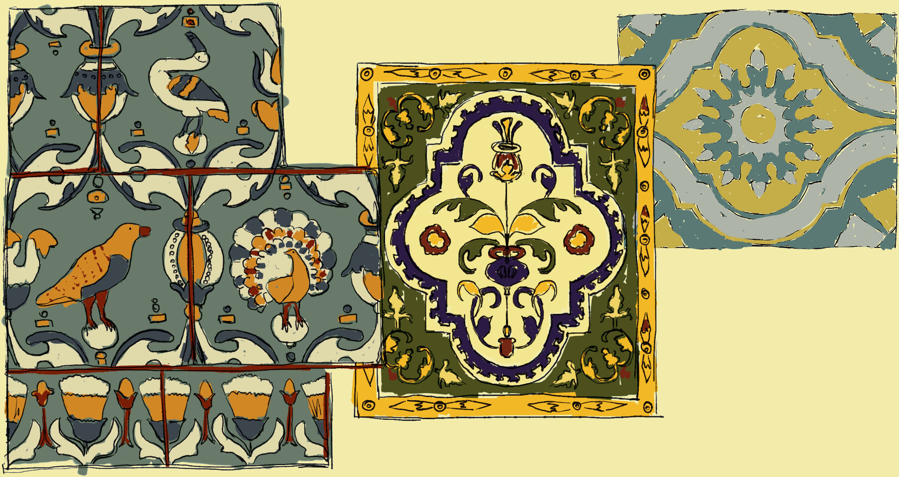
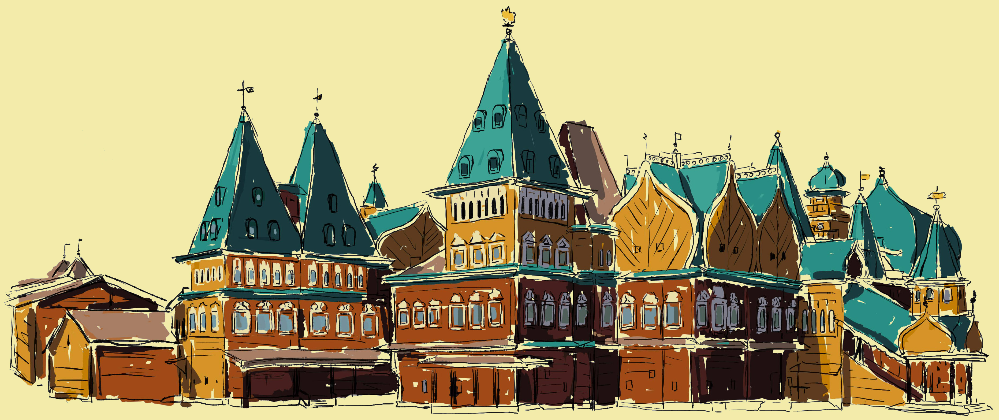

ЛЕТНЯЯ ПАРАДНАЯ РЕЗИДЕНЦИЯ ЦАРЯ АЛЕКСЕЯ МИХАЙЛОВИЧА НАХОДИЛАСЬ В СЕЛЕ КОЛОМЕНСКОМ. ЗДЕСЬ ВО ВТОРОЙ ПОЛОВИНЕ
XVII ВЕКА БЫЛ
ПОСТРОЕН ВЕЛИКОЛЕПНЫЙ АРХИТЕКТУРНЫЙ АНСАМБЛЬ, НАЗВАННЫЙ ВОСЬМЫМ ЧУДОМ СВЕТА. ЦАРСКИЕ ХОРОМЫ
СОСТОЯЛИ ИЗ МНОЖЕСТВА ДЕРЕВЯННЫХ
ЗДАНИЙ (ПАЛАТ) В ВИДЕ ШАТРОВ, ЛУКОВИЦ И БОЧЕК, ОБЪЕДИНЕННЫХ ГАЛЕРЕЯМИ,
КРЫЛЕЧКАМИ И ПЕРЕХОДАМИ. ВЕЛИЧИЕ И НЕБЫВАЛАЯ КРАСОТА СТРОЕНИЙ УДИВЛЯЛА ИНОСТРАННЫХ ПОСЛОВ И УТВЕРЖДАЛА СИЛУ ЦАРСКОЙ ВЛАСТИ.
ЦАРЬ ОЧЕНЬ ЛЮБИЛ КОЛОМЕНСКОЕ, ЗДЕСЬ ОН ОХОТИЛСЯ И ПРИНИМАЛ ПОСЛОВ И ИМЕННО ОН ПРЕВРАТИЛ СВОЮ УСАДЬБУ В
СКАЗОЧНЫЙ ДОМ. ОСЕНЬЮ 1666 ГОДА НАЧАЛИСЬ ПРИГОТОВЛЕНИЯ К ПОСТРОЙКЕ ДВУХЭТАЖНОГО КОЛОМЕНСКОГО ДВОРЦА; «1667
ГОДА МАЯ 2, В ЧЕТВЕРТОК» СОСТОЯЛАСЬ ЗАКЛАДКА «ГОСУДАРЕВЫХ ХОРОМ».
К ОСЕНИ 1667 ГОДА ЧЕРНОВОЙ ЭТАП СТРОИТЕЛЬСТВА
ДВОРЦА АЛЕКСЕЯ МИХАЙЛОВИЧА БЫЛ ЗАВЕРШЁН: «СТРОИЛИ ПЛОТНИЧИЙ СТАРОСТА СЕНЬКА ПЕТРОВ И СТРЕЛЕЦ ПЛОТНИК ИВАШКА МИХАЙЛОВ».
ЗИМОЙ 1667 И ВЕСЬ 1668 ГОД ВЕЛОСЬ УКРАШЕНИЕ ДВОРЦА РЕЗЬБОЙ БРИГАДОЙ, КОТОРАЯ РАНЕЕ ТРУДИЛАСЬ В НОВОМ ИЕРУСАЛИМЕ У
ПАТРИАРХА НИКОНА.
 В МАЕ 1669 ГОДА ИЗ-ЗА ГРАНИЦЫ БЫЛИ ДОСТАВЛЕНЫ КРАСКИ И СУСАЛЬНОЕ ЗОЛОТО ДЛЯ ОТДЕЛКИ ДВОРЦА, А ТАКЖЕ РАСПИСАНА ЗЕЛЕНЬЮ ЧЕШУЙЧАТАЯ КРОВЛЯ; В ИЮНЕ НАЧАЛАСЬ РОСПИСЬ ВНУТРЕННИХ ПОМЕЩЕНИЙ — РОСПИСЬЮ РУКОВОДИЛ ИКОНОПИСЕЦ СИМОН УШАКОВ И ВЫПИСАННЫЙ ИЗ ПЕРСИИ АРМЯНИН БОГДАН САЛТАНОВ. РАСПИСЫВАЛИ СТЕНЫ И ПОДВОЛОКИ (ПОТОЛКИ) ПО ГРУНТОВАННЫМ ХОЛСТАМ. РОСПИСЬ И ЗОЛОЧЕНИЕ ПРОДОЛЖАЛОСЬ ДВА ГОДА. В 1673 ГОДУ ЧАСОВОЙ МАСТЕР ОРУЖЕЙНОЙ ПАЛАТЫ ПЁТР ВЫСОЦКИЙ (ВЫСОТЦКОЙ) УСТРОИЛ «МЕХАНИКУ РЫКАЮЩИХ ЛЬВОВ», КОТОРЫЕ СТОЯЛИ У ТРОНА, А САМА МЕХАНИКА РАСПОЛАГАЛАСЬ В ОСОБОМ ЧУЛАНЕ.
ПОСЛЕ СМЕРТИ АЛЕКСЕЯ МИХАЙЛОВИЧА ДВОРЕЦ БЫЛ РАСШИРЕН И ЧАСТИЧНО ПЕРЕСТРОЕН: ВЕСНОЙ 1681 ГОДА ФЁДОР АЛЕКСЕЕВИЧ ПРИКАЗАЛ РАЗОБРАТЬ СТАРУЮ ПОВАЛУШУ (СТОЛОВУЮ) И НА ЕЁ МЕСТЕ ПОСТРОИТЬ НОВУЮ СТОЛОВУЮ — РАБОТУ ВЫПОЛНЯЛ КРЕСТЬЯНИН БОЯРИНА П. В. ШЕРЕМЕТЕВА СЕНЬКА ДЕМЕНТЬЕВ; НОВАЯ СТОЛОВАЯ БЫЛА СОЕДИНЕНА С ХОРОМАМИ ЦАРЯ НОВЫМИ СЕНЯМИ, ПОД КОТОРЫМИ БЫЛИ СООРУЖЕНЫ ЗОЛОЧЁНЫЕ ВОРОТА, НАЗВАННЫЕ ПЕРЕДНИМИ. ПОСЛЕ СТРЕЛЕЦКОГО БУНТА ОХРАНА ДВОРЦА БЫЛА УСИЛЕНА — БЫЛО ПОСТРОЕНО 16 ИЗБ.
В 1684 ГОДУ БЫЛИ ОТРЕМОНТИРОВАНЫ ГОСУДАРЕВЫ ХОРОМЫ И ХОЗЯЙСТВЕННЫЕ ПОСТРОЙКИ; ОБНОВЛЕНЫ РОСПИСЬ ПОМЕЩЕНИЙ И ЗЕЛЕНЬ КРОВЕЛЬ. В 1685 ГОДУ В КАМЕННОЙ БАШНЕ БЫЛИ УСТРОЕНЫ БОЕВЫЕ ЧАСЫ; ПЕРЕДНИЕ ВОРОТА УКРАШЕНЫ ЖЕЛЕЗОМ И АНГЛИЙСКИМ ОЛОВОМ. ЭТО БЫЛ ПОСЛЕДНИЙ РЕМОНТ ДВОРЦА.
ПОСЛЕ ПЕРЕСЕЛЕНИЯ ЦАРСКОГО ДВОРА В САНКТ-ПЕТЕРБУРГ, В ПЕРВОЙ ПОЛОВИНЕ XVIII ВЕКА ДВОРЕЦ СТОЯЛ ЗАБРОШЕННЫМ, И РЕДКО ПОСЕЩАЛСЯ. И ХОТЯ АННА ИОАННОВНА В 1736 ГОДУ ПОВЕЛЕЛА СОДЕРЖАТЬ ДВОРЕЦ В «ДОБРОМ ПРИЗРЕНИИ», НО РЕМОНТНЫХ РАБОТ ПРАКТИЧЕСКИ НЕ ПРОВОДИЛОСЬ.

ВО ВРЕМЯ ПОСЕЩЕНИЯ МОСКВЫ, 4 ОКТЯБРЯ 1762 ГОДА КОЛОМЕНСКИЙ ДВОРЕЦ ОСМАТРИВАЛА ИМПЕРАТРИЦА ЕКАТЕРИНА II. ОНА ПОВЕЛЕЛА СОЗДАТЬ ПЛАНЫ ФАСАДОВ ДВОРЦА И СОСТАВИТЬ СМЕТЫ РЕМОНТА; РАБОТА БЫЛА ПОРУЧЕНА МИЧУРИНУ; 11 МАЯ 1764 ГОДА БЛАНК ПРЕДСТАВИЛ СМЕТУ, НО ИЗ-ЗА ЗНАЧИТЕЛЬНОСТИ СУММЫ (56 934 РУБ. 27 КОП.) ИМПЕРАТРИЦА ПОВЕЛЕЛА В 1766 ГОДУ ВЫСТРОИТЬ НЕБОЛЬШОЙ ДВОРЕЦ НА САМОМ БЕРЕГУ МОСКВЫ РЕКИ, НА МЕСТЕ СКОТНОГО И КОНЮШЕННОГО ДВОРА — К ЛЕТУ 1767 ГОДА ОН БЫЛ ГОТОВ. В ЭТО ЖЕ ВРЕМЯ, 31 МАЯ 1767 ГОДА «КОЛОМЕНСКИЕ УПРАВИТЕЛЬСКИЕ ДЕЛА» СООБЩИЛИ, ЧТО В СТАРОМ ДВОРЦЕ НАЧАЛИ ОБРУШИВАТЬСЯ КРОВЛИ И ЛЕСТНИЦЫ И 16 ИЮЛЯ БЫЛО ПОЛУЧЕНО ПОВЕЛЕНИЕ КОЛОМЕНСКИЙ ДВОРЕЦ И ЕГО ФУНДАМЕНТ РАЗОБРАТЬ, И МЕСТО ОЧИСТИТЬ. КОГДА БЫЛ РАЗОБРАН ДВОРЕЦ — НЕИЗВЕСТНО. ПО ЛИНИИ ОСНОВАНИЯ ДВОРЦА ДЛЯ СОХРАНЕНИЯ ПАМЯТИ О МЕСТОПОЛОЖЕНИИ БЫЛИ ВЫСАЖЕНЫ КУСТЫ АКАЦИИ; ХУДОЖНИКОМ Д. А. СМИРНОВЫМ БЫЛА ВЫПОЛНЕНА ДЕРЕВЯННАЯ МОДЕЛЬ ДВОРЦА, КОТОРАЯ НЫНЕ ХРАНИТСЯ В МУЗЕЕ-ЗАПОВЕДНИКЕ
ДВОРЕЦ ЦАРЯ АЛЕКСЕЯ МИХАЙЛОВИЧА СОСТОЯЛ ИЗ 27 ТЕРЕМОВ И ПАЛАТ, СОЕДИНЕННЫХ СЕНЯМИ И ПЕРЕХОДАМИ. ВЫСОТА НЕКОТОРЫХ ПАЛАТ ДОСТИГАЛА 30 МЕТРОВ, А ОБЩАЯ ПЛОЩАДЬ АНСАМБЛЯ СОСТАВЛЯЕТ БОЛЕЕ 7000 КВ. МЕТРОВ. ХОРОМЫ РАЗДЕЛЕНЫ НА ЖЕНСКУЮ И МУЖСКУЮ ПОЛОВИНЫ. В ЖЕНСКОЙ ЧАСТИ ПАЛАТЫ ЦАРИЦЫ И ЦАРЕВЕН, А В МУЖСКОЙ – КАБИНЕТЫ ЦАРЯ И ЦАРЕВИЧЕЙ, А ТАКЖЕ ПАЛАТЫ, ПРЕДНАЗНАЧЕННЫЕ ДЛЯ ОЖИДАНИЯ И ПРИЕМА ГОСТЕЙ. ТАКЖЕ МЫЛЬНЯ И ДЕРЕВЯННАЯ ВАННАЯ ЦАРЯ.
СТЕНЫ И ПОТОЛОК ЗАЛОВ УКРАШЕНЫ РОСПИСЬЮ, ПЕЧИ ОБЛИЦОВАНЫ РОСКОШНЫМИ ИЗРАЗЦАМИ. ПОТОЛОЧНАЯ РОСПИСЬ В ПЕРЕДНИХ ПАЛАТАХ ПРЕДСТАВЛЯЕТ БИБЛЕЙСКУЮ ТЕМУ, В ПРЕСТОЛЬНОЙ ЦАРИЦЫНСКОЙ ПАЛАТЕ ИЗОБРАЖЕНЫ ВРЕМЕНА ГОДА В ВИДЕ МУЖЧИН РАЗНОГО ВОЗРАСТА. В СТОЛОВОЙ ПАЛАТЕ НА ПОТОЛКЕ СИМВОЛИЧЕСКОЕ ИЗОБРАЖЕНИЕ СОЛНЦА И ЗВЕЗД, ЗНАКОВ ЗОДИАКА И ЛУНЫ. ЭТИ ЖИВОПИСНЫЕ КАРТИНЫ ПОДЧЕРКИВАЛИ ПОКРОВИТЕЛЬСТВО ЦАРСКОЙ ВЛАСТИ СО СТОРОНЫ НЕБЕСНЫХ СИЛ. В ПАЛАТАХ ЕЛИЗАВЕТЫ ПЕТРОВНЫ ПОТОЛОЧНАЯ РОСПИСЬ ИЗОБРАЖАЕТ «ТРИУМФ МАРСА И ВЕНЕРЫ». КОМНАТА ДОЧЕРИ ПЕТРА ПЕРВОГО ЕЛИЗАВЕТЫ ОФОРМЛЕНА В СТИЛЕ БАРОККО. ИЗУМИТЕЛЬНОЙ КРАСОТЫ ЛЮСТРА ИЗ ВЕНЕЦИАНСКОГО СТЕКЛА, СТИЛИЗОВАННАЯ ПОД XVIII ВЕК. МНОГИЕ ПРЕДМЕТЫ ИНТЕРЬЕРА, ИКОНЫ И ГОБЕЛЕНЫ ЯВЛЯЮТСЯ ПОДЛИННЫМИ, СОЗДАННЫМИ МАСТЕРАМИ XVII И XVIII ВЕКОВ
ИДЕЯ ВОССОЗДАНИЯ ДВОРЦА ВОЗНИКЛА В МУЗЕЕ-ЗАПОВЕДНИКЕ ЕЩЁ В 1990-Е ГОДЫ, И В ИТОГЕ БЫЛА ПОДДЕРЖАНА ПРАВИТЕЛЬСТВОМ МОСКВЫ. БЫЛИ ПРОВЕДЕНЫ АРХЕОЛОГИЧЕСКИЕ РАБОТЫ И ИССЛЕДОВАНЫ СОХРАНИВШИЕСЯ ФУНДАМЕНТЫ. НО ПОСКОЛЬКУ ЗА ПРОШЕДШЕЕ ВРЕМЯ НА МЕСТЕ БЫВШЕГО ДВОРЦА СФОРМИРОВАЛСЯ ПРИРОДНЫЙ КОМПЛЕКС И УЖЕ ВЫРОСЛИ МНОГОВЕКОВЫЕ ДУБЫ И ЛИПЫ, БЫЛО ПРИНЯТО РЕШЕНИЕ О ПЕРЕНОСЕ СТРОИТЕЛЬСТВА НА ТЕРРИТОРИЮ БЫВШЕЙ ДЕРЕВНИ ДЬЯКОВСКОЕ, ЗА ГОЛОСОВ ОВРАГ.
НЫНЕШНЕЕ СТРОЕНИЕ ПРЕДСТАВЛЯЕТ СОБОЙ МАКЕТ ДВОРЦА АЛЕКСЕЯ МИХАЙЛОВИЧА В НАТУРАЛЬНУЮ ВЕЛИЧИНУ. КОНФИГУРАЦИЯ И ПРОПОРЦИИ ЗДАНИЯ РЕШЕНЫ В СООТВЕТСТВИИ С ЧЕРТЕЖАМИ, СДЕЛАННЫМИ ПО ВЕЛЕНИЮ ЕКАТЕРИНЫ II. ЧАСТЬ КРИТИКОВ РЕКОНСТРУКЦИИ ДВОРЦА СОМНЕВАЛИСЬ В ПОДЛИННОСТИ ЧЕРТЕЖЕЙ И НАЗЫВАЛИ ИХ ХУДОЖЕСТВЕННЫМ ВЫМЫСЛОМ, НО РАСКОПКИ ФУНДАМЕНТОВ ДВОРЦА, ВЫПОЛНЕННЫЕ АРХЕОЛОГОМ БЕЛЯЕВЫМ ПОДТВЕРДИЛИ ПОЛНОЕ СОВПАДЕНИЕ С ЧЕРТЕЖАМИ, СОЗДАННЫМИ В 1767 ГОДУ АРХИТЕКТУРНЫМ ПОМОЩНИКОМ И.К. ВАСЬКОВЫМ ПОД РУКОВОДСТВОМ ПОДПОЛКОВНИКА КНЯЗЯ П.И. МАКУЛОВА. ТАКИМ ОБРАЗОМ, ФАСАДЫ И ПЛАНИРОВКА ПОМЕЩЕНИЙ РЕКОНСТРУИРОВАННОГО ДВОРЦА ТОЧНО СОВПАДАЮТ С ОРИГИНАЛЬНОЙ. ОТДЕЛКА ПОМЕЩЕНИЙ И РОСПИСИ ВЫПОЛНЕНЫ ПО БОГАТЫМ АРХИВНЫМ МАТЕРИАЛАМ И, ХОТЯ НЕ ЯВЛЯЮТСЯ СТОЛЬ ТОЧНЫМИ, БЛИЗКИ К ОРИГИНАЛЬНОЙ СТИЛИСТИКЕ